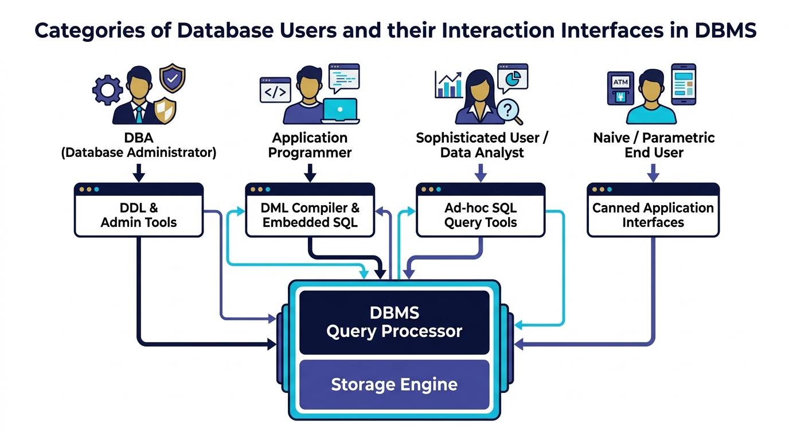

Database Users & DBA Roles
Master the 4 categories of database users (DBA, Application Programmers, Sophisticated Users, Naive Users), their interaction interfaces, and essential DBA responsibilities for IBPS SO IT Officer.
💡 1. Who Interacts with a Database?
A Database Management System (DBMS) is used by different people with different technical skills and goals. DBMS provides tailored interfaces ranging from graphical web forms to low-level administration utilities.
🖼️ Visual Diagram: Database User Categories & Interfaces
The diagram below shows how different user types connect to the DBMS Query Processor through their specialized interfaces:

🛡️ 1.4.1 Database Administrator (DBA)
The Database Administrator (DBA) is the person or group responsible for central control, maintenance, security, and performance tuning of the database system.
- 1. Schema Definition: Writing DDL commands (
CREATE TABLE,CREATE VIEW) to create logical schemas. - 2. Storage Structure & Access Method Definition: Configuring physical disk storage, block allocation, file organizations, and B-Tree/Hash indexes.
- 3. Schema & Physical Organization Modification: Modifying existing table schemas or index definitions to optimize query execution.
- 4. Granting Data Access Authorization: Issuing DCL commands (
GRANTandREVOKE) to control user permissions and enforce security policies. - 5. Specifying Integrity Constraints: Defining
PRIMARY KEY,FOREIGN KEY,UNIQUE,NOT NULL, andCHECKconstraints. - 6. Routine Maintenance, Backup & Recovery: Scheduling automated daily log backups, monitoring free disk space, restoring database state after crashes, and performance tuning.
👥 1.4.2 Classification of Database Users
1. Naive / Parametric End Users 📱
Non-technical users who interact with the database using pre-written, menu-driven application programs or GUI forms called Canned Transactions.
- Skill Required: No database or SQL knowledge required.
- Examples: Bank ATM users, railway reservation clerks, online shopping customers, bank tellers.
- Interface: Mobile apps, Web forms, ATM screens.
2. Application Programmers 💻
Computer professionals who write application programs to interact with the database using Embedded SQL, DML compilers, or ORM frameworks.
- Skill Required: Expertise in programming languages (Java, Python, C#, C++) and SQL DML.
- Examples: Full-stack web developers, mobile app backend engineers.
- Interface: Programming IDEs, DML compilers, JDBC/ODBC connectors.
3. Sophisticated Users (Data Analysts / Scientists) 📈
Technical users who interact with the database without writing traditional application software; instead, they write custom ad-hoc SQL queries and analytical scripts.
- Skill Required: High proficiency in SQL, Data Mining, and Analytical tools.
- Examples: Data Analysts, Business Intelligence (BI) Engineers, Financial Auditors.
- Interface: Interactive SQL query tools (DBeaver, SQL Developer, Jupyter Notebooks).
4. Specialized / Standalone Users 🛠️
Users who write specialized database applications that do not fit into the traditional data-processing framework.
- Examples: Computer-Aided Design (CAD) database users, Geographic Information Systems (GIS) mapping users, Multimedia DB engineers.
⚖️ Summary Table: Comparing Database User Types
| User Category | Technical Skill | Interface Used | Query Language / Tools | Real-Life Example |
|---|---|---|---|---|
| DBA | Expert / Administrative | DDL & Admin Utilities | DDL, DCL, Admin Scripts | Database System Admin |
| Naive End User | No technical skill | Canned Applications / GUI | Form Buttons (No SQL) | ATM User / Bank Clerk |
| Application Programmer | High (Programming) | DML Compiler / IDE | Embedded SQL, JDBC, ORM | Backend Java/Python Dev |
| Sophisticated User | High (Database/Analytics) | Ad-hoc Query Processor | Interactive SQL, OLAP | Data Scientist / Analyst |
🎯 IBPS SO IT Officer — Exam Focus & Past PYQ Cues
Q1: Who is responsible for granting authorization for database access?
👉 Answer: Database Administrator (DBA) using DCL (GRANT/REVOKE).
Q2: Users who interact with DBMS by invoking canned transactions through GUI forms are called?
👉 Answer: Naive or Parametric End Users.
Q3: Data Analysts writing ad-hoc SQL queries belong to which category of database users?
👉 Answer: Sophisticated Users.
Q4: Writing DDL commands to define table schemas is a responsibility of?
👉 Answer: DBA (Database Administrator).